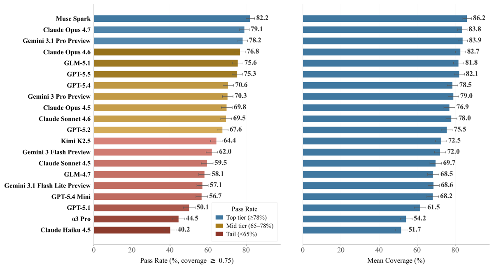
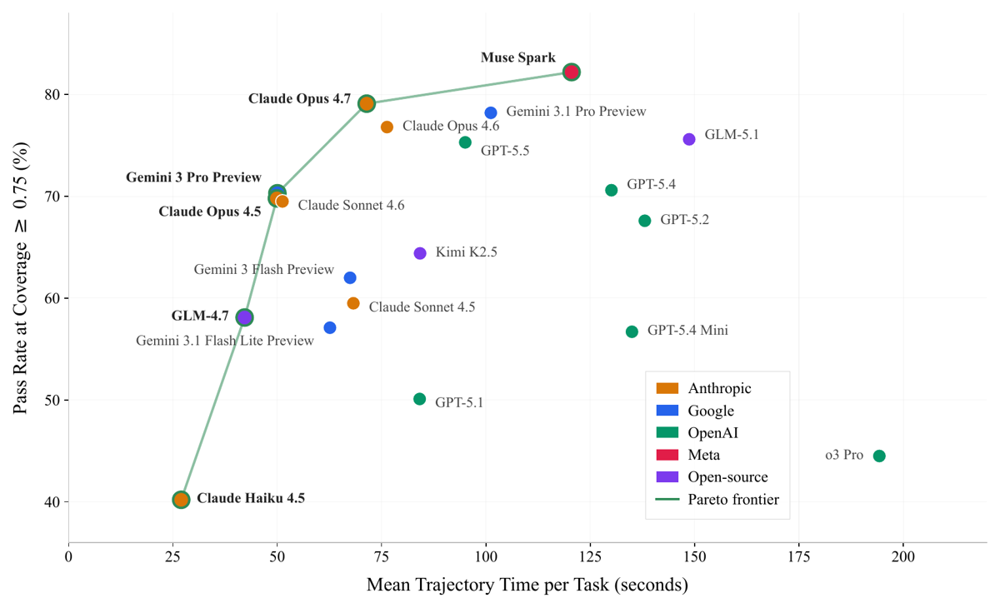
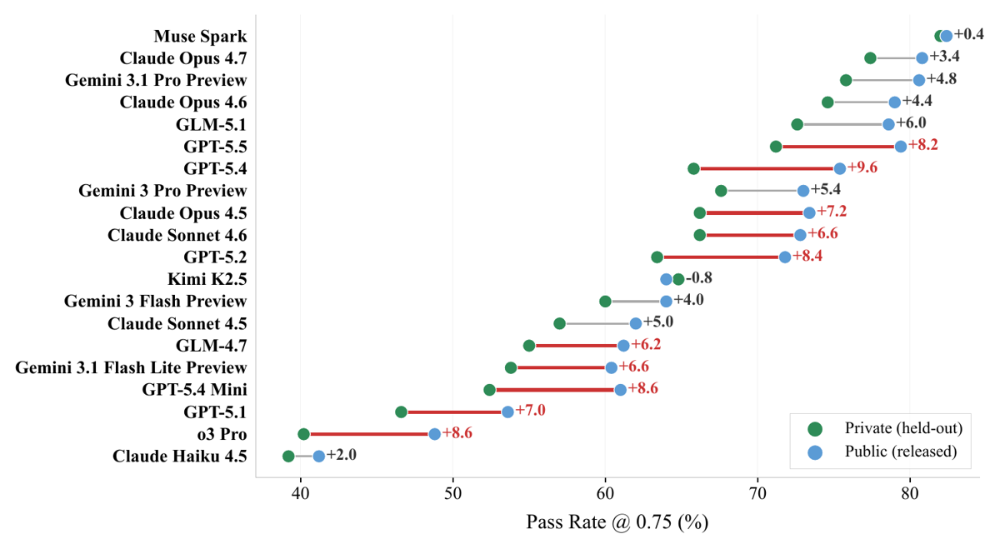

⚠️ Avertissement sur les sources du dossier.
papers/2602.00933/full.texn'est pas ce papier : c'est le gabarit LaTeX vierge de Scale AI (main.tex, texte 100 % placeholder, tables fictives « Baseline 71.2 / Proposed 78.5 »).fetch_arxiv.pya aplati le mauvais fichier racine. Le vrai source estpapers/2602.00933/src/arxiv_version.tex(1 363 lignes), désigné commetopleveldanssrc/00README.json. Ce mémo est écrit à partir desrc/arxiv_version.texet des figures réellement incluses. Tout chiffre lu dansfull.texpour ce papier est à jeter. À corriger dansfetch_arxiv.py: lire00README.jsonpour choisir la racine.
TL;DR — Benchmark d'évaluation (pas d'env d'entraînement) de 1 000 tâches tool-use single-turn / multi-call contre 36 serveurs MCP de production (220 outils), noté par une rubrique de claims atomiques jugée par LLM claim par claim, découplée de la trajectoire ; plus une taxonomie de 11 failure modes appliquée automatiquement à chaque échec.
Claim principal, précisément — (i) sur 20 modèles frontier de six fournisseurs, le pass rate au seuil de couverture ≥ 0,75 plafonne à 82,2 % (Muse Spark, Meta) avec une structure en trois paliers [§4.1, Tab. 8] ; (ii) 63,3 % des ~6 900 échecs diagnostiqués sont cognitifs (compréhension, synthèse, parsing, arrêt) et non des erreurs d'appel d'outil [§4.2, Tab. 4] ; (iii) la notation answer-centric par claims donne le crédit complet aux trajectoires alternatives valides [§3.2].
Ce que ça dit des envs (en une ligne) — quand il n'existe pas de vérifieur exact, on peut fabriquer un signal dense, reproductible et découplé de la trajectoire en décomposant la réponse attendue en propositions atomiques indépendantes, chacune notée séparément par un juge — c'est le seul papier du lot à en donner le prompt verbatim, le coût humain et la sensibilité au juge.
⚠️ Le manuel d'annotation complet n'est pas publié (« proprietary operational procedures, access-control details, private benchmark templates ») [App. D]. Une version antérieure de la checklist de construction figure en commentaire du source (time-invariance, no name leakage, tool dependency, unambiguity, complexité 3–6 appels) mais a été retirée du papier compilé → traiter comme non publié.
| Grandeur | Valeur | Source |
|---|---|---|
| Tâches | 1 000 (500 public / 500 privé, split aléatoire) | §3, §3.4 |
| Serveurs | 36 (inventaire complet avec #tâches par serveur) | [Tab. 5] |
| Outils distincts | 220 | §3 |
| Outils exposés / tâche | 6–37, moyenne 15,2 | §3.2 |
| Outils requis / tâche | 2–8, moyenne 4,1 | §3.2 |
| Distractors / tâche | moyenne 11,1 | §3.2 |
| Tâches cross-server | 98,6 % (≥ 2 serveurs, moy. 2,55) ; 51,7 % à 2, 38,2 % à 3, 8,7 % à ≥ 4 | §3.2 |
| Claims / tâche | moyenne 4,7, plage 1–23 ; 4 % des tâches > 10 claims | §3.2, App. C |
| Trajectoire de référence | moyenne 9,8 étapes d'appel d'outil | §3.2 |
Répartition par bucket [App. B] : Basic 32 %, Productivity 22 %, Coding 22 %, Analytics 12 %, Financial 12 %. Serveurs les plus sollicités : oxylabs (155 tâches), filesystem (133), exa (108), wikipedia (99), mongodb (98) ; le plus rare : context7 (4) [Tab. 5].
⚠️ Aucune mesure de difficulté a priori. Pas de stratification par difficulté, pas de score de difficulté par tâche, pas de pass@k du modèle de base. La seule proxy de difficulté est post hoc (la couverture obtenue par les modèles) et la complexité structurelle (nb de serveurs, nb de claims). Pour un benchmark, c'est acceptable ; pour un env RL, c'est le premier manque.
Non applicable — benchmark d'évaluation, ordre des tâches sans effet, pas de rééchantillonnage. Aucun curriculum.
Non applicable — aucun entraînement dans ce papier.
À chaque tour, le modèle voit : le prompt single-turn en langage naturel (but + contraintes, sans nom de serveur/outil/paramètre), le tool set alloué à la tâche (6–37 outils typés JSON-schema, dont 2–8 pertinents), et l'historique des couples (appel, sortie) [§3.2, App. J]. Un résumé des erreurs d'outil est réinjecté dans le contexte [App. H].
⚠️ Aucun system prompt. Le source contient un commentaire explicite : « We have no system prompt, should we discuss this? » [App. C, commenté]. Le harness publié offre un flag --system-prompt optionnel, vide par défaut [repo README]. Pour l'évaluation du papier : pas de system prompt.
Formalisation [App. J] : chaque outil t définit une relation typée
t : Args_t → Out_t ∪ Err_t
où Args_t est un domaine typé par JSON-schema et la sortie est soit une valeur bien typée, soit un token d'erreur (violation de schéma, rate limit). Une tâche est le tuple
τ = (G, C, T_expose, π*, C*)
— G le but, C le contexte/contraintes en langage naturel, T_expose ⊆ T la liste blanche d'outils présentée à l'agent, π* la trajectoire de référence (séquence minimale couvrant les dépendances, usage diagnostic seulement), C* la liste de claims. T_req ⊆ T_expose = outils requis par π* ; T_dist = T_expose \ T_req = distractors. Les outils sont supposés disjoints entre serveurs.
Le papier ne recopie pas les signatures complètes des 220 outils (renvoyées au « per-server tool catalog » publié avec le dataset) [App. B]. Exemple de noms d'outils réels, préfixés par serveur [App. D.5] : arxiv_search_papers, notion_API-post-search, notion_API-post-database-query, notion_API-retrieve-a-database, fetch_fetch, memory_read_graph, memory_search_nodes, slack_channels_list, slack_conversations_history, whois_whois_domain, whois_whois_tld.
--max-turns 256 [repo README].--timeout 1800 s par tâche dans le harness publié [repo README].Prompt. « I'm researching papers on advertisement effectiveness and comparing it to our own online database advertising data. There's a 2024 paper by Jane Castleman that deals with ad control effectiveness, can you get me the abstract? I believe it mentions ad locality, for which I will also need to ask you for the date of our campaign with the biggest engagement rate, started during the 2015–2023 period, and its locality. »
Outils pertinents. arxiv_search_papers, notion_API-post-search, notion_API-post-database-query.
Distractors (12). notion_API-retrieve-a-database, notion_API-retrieve-a-block, notion_API-retrieve-a-page, fetch_fetch, memory_read_graph, memory_search_nodes, slack_channels_list, slack_conversations_history, slack_conversations_replies, slack_conversations_search_messages, whois_whois_domain, whois_whois_tld.
Trajectoire de référence.
1. arxiv_search_papers, query = « jane castleman ad locality 2024 » → récupère l'abstract.
2. notion_API-post-search, query = « advertising » → identifie la base advertising.
3. notion_API-post-database-query, database_id = 21b97551-844e-8068-b387-fe7a56b04348 → récupère la date de campagne.
Claims. - C1. Il existe un papier 2024 de Jane Castleman intitulé « Why am I Still Seeing This: Measuring the Effectiveness Of Ad Controls and Explanations in AI-Mediated Ad Targeting Systems. » - C2. L'abstract de ce papier est : « Recently, Meta has shifted towards AI-mediated ad targeting mechanisms […abrégé dans le papier] » - C3. Trois campagnes publicitaires sont à égalité au taux d'engagement le plus élevé, chacune à 15 %. - C4. Les dates de début des trois campagnes gagnantes sont 2022-06-24, 2019-09-20 et 2017-09-09. - C5. Les localités des trois campagnes gagnantes sont National, International et International.
⚠️ Noter la structure : C1/C2 sont des claims de restitution longue (un abstract entier comme claim unique — la granularité n'est donc pas uniforme), C3/C4/C5 des claims de valeurs exactes multiples. Un seul et même barème à 3 niveaux s'applique aux deux, ce qui rend la note « partially_fulfilled » très hétérogène en sens.
LLM-as-judge structuré par rubrique de claims atomiques, answer-centric. Ce n'est ni de l'exact match, ni de l'exécution de tests, ni un reward model appris, ni un juge holistique. Positionné explicitement contre les deux extrêmes [§2.2] : les vérifieurs programmatiques dédiés (MCP-Universe, Toolathlon, MCPMark) qui plafonnent à < 250 tâches par coût d'autorat, et le LLM-as-judge holistique (MCP-Bench, LiveMCPBench) qui introduit des biais de style et de verbosité.
S : Y × 2^{C*} → [0,1] ; « Pass/fail is determined solely by S(Â, C*), independent of the trajectory π* » [App. J].fulfilled = 1,0 · partially_fulfilled = 0,5 · not_fulfilled = 0,0 [§3.2, App. C].π* sert uniquement aux contrôles de solvabilité, à la validation des dépendances d'outils, et au diagnostic post-échec [§3.2].Aucun. Pas de bonus de format, pas de pénalité de longueur, pas de pénalité d'efficacité, pas de pénalité pour appels superflus. L'efficacité est mesurée mais hors score [§4.3]. C'est cohérent avec la revendication « disentangled from agent verbosity or style » [abstract] : rien dans le reward ne dépend de la forme de la réponse.
\todo{TODO: is this actually real?} / \todo{TODO: Check if this is real} des auteurs eux-mêmes. Les auteurs ont donc retiré une statistique de validation humaine qu'ils ne pouvaient pas confirmer. À leur crédit intellectuel ; mais le résultat est qu'aucune validation humaine du juge n'existe.You are evaluating how well a model's response addresses a specific expert-defined claim.
SCORING CRITERIA:
- fulfilled: Claim is completely and accurately addressed. The response covers all key details.
- partially_fulfilled: Claim is partially addressed. The response covers some but not all key details.
- not_fulfilled: Claim is not addressed. The response does not include any key details.
NUMERICAL COMPARISON GUIDELINES:
- For numerical values, use reasonable approximation thresholds:
* Exact match NOT required for decimals
* Values within 5% of the claimed number are considered matching
* For percentages, ±1 percentage points is acceptable
* Round to appropriate significant figures based on context
- Consider the precision appropriate to the domain:
* Scientific measurements may need higher precision
* General statistics/estimates can have looser matching
* Financial figures should match to reasonable business precision
(e.g., millions/billions don't need exact cents)
- If a number is expressed differently but mathematically equivalent
(e.g., "0.5" vs "50%" vs "half"), consider it a match
CLAIM TO EVALUATE:
{claim}
MODEL RESPONSE TO ANALYZE:
{response}
INSTRUCTIONS:
1. Determine if the core requirement of the claim is met in the response
2. Check if all key components from the claim appear substantively in the response
- For numerical values, apply the flexible matching guidelines above
- Focus on whether the same magnitude and meaning are conveyed
3. Assign the appropriate coverage_outcome
4. Provide specific justification referencing what was/wasn't covered
- When numbers differ slightly, note if they're within acceptable range
5. Provide a confidence level (0.0-1.0) for your assessment
Be rigorous but fair in your assessment. Focus on whether the response conveys the same
information as the claim, not on exact numerical precision unless precision is critical
to the claim's meaning.
Sortie structurée : label catégoriel + justification + confidence [App. C]. ⚠️ La confidence est demandée mais n'est jamais utilisée dans l'agrégation ni analysée.
Appliqué uniquement aux paires tâche-modèle sous le seuil (coverage < 0,75), jamais pour le pass/fail [App. E].
| Famille | Modes |
|---|---|
| Tool-call (4) | malformed_call (bon outil, mauvais paramètres) · wrong_tool (outil incapable de répondre alors qu'un bon existait) · no_tool_use (répond de mémoire paramétrique) · err_recovery (erreur d'outil non absorbée : retry identique, boucle, abandon) |
| Cognitive (7) | task_misunderstanding · faulty_synthesis (bonnes sorties, mauvaise combinaison) · response_misparsing (mauvais champ/ligne lu) · early_termination (s'arrête avant d'avoir couvert) · hallucinated_fact (affirme ce qu'aucune sortie d'outil ne contient) · logical_error (chaîne de raisonnement fautive sur données correctes) · constraint_violation (ignore une condition explicite du prompt) |
Chaque mode est défini avec un exemple concret [Tab. 6] et les mêmes définitions servent au juge diagnostique [App. E.1]. Le prompt de diagnostic est structuré en 4 étapes (ancrer sur la trajectoire gold attendue → examiner la trajectoire réelle tour par tour → considérer quelles claims ont été ratées et le raisonnement du scorer → mapper vers un mode), avec 7 règles de juge dont, notablement :
⚠️ Cette dernière contrainte force une étiquette, y compris sur un échec dû au bruit de la liste de claims ou à un dérive d'API amont. Il n'y a ni catégorie « autre » ni catégorie « tâche cassée ». Les 63,3 % / 36,7 % sont donc un partage de tout l'échec, y compris ce qui n'est pas imputable au modèle. Les auteurs ne le discutent pas.
⚠️ Le diagnostic reçoit la trajectoire de référence. Les auteurs identifient le risque (« failure labels may reflect the author-provided evidence path when multiple very different evidence paths exist ») et listent 3 mitigations : scoring pass/fail par claims, diagnostic appliqué seulement après échec, et instruction au juge de traiter la trajectoire comme une trace d'évidence suffisante et non canonique [App. A]. La mitigation n'est pas mesurée.
❌ Le vérifieur n'a jamais été attaqué ni testé contre le hacking. Rien dans le papier. C'est structurellement cohérent : personne n'est entraîné contre ce vérifieur, il n'y a donc pas de pression d'optimisation. Mais cela veut dire que rien ne dit ce que devient cette rubrique sous RL — et c'est précisément l'usage qui nous intéresse (voir §5 et §9).
Non applicable : aucun entraînement dans ce papier. Ni RL, ni SFT, ni DPO. Aucun algorithme, aucun hyperparamètre d'optimisation, aucune courbe de reward. Le papier est une évaluation de modèles pris sur étagère.
Ce qui tient lieu de « configuration » — et qui compte pour lire les résultats :
Configurations de raisonnement, par modèle [Tab. 9] — hétérogènes :
| Famille | Config |
|---|---|
| Claude Opus 4.7 / 4.6 | adaptive, effort=max |
| Claude Opus 4.5, Sonnet 4.5 | effort=high, budget=10k |
| Claude Sonnet 4.6 | reasoning=high |
| Claude Haiku 4.5 | reasoning=None (default) |
| Gemini 3.1 Pro / 3 Pro / 3 Flash / 3.1 Flash Lite | thinking=high |
| GPT-5.5 / 5.4 / 5.2 / 5.4 Mini | reasoning=xhigh |
| GPT-5.1 | reasoning=high |
| o3 Pro | reasoning=None (default) |
| Muse Spark (Meta) | reasoning=max |
GLM-5.1, GLM-4.7, Kimi K2.5 (via fireworks_ai/) |
reasoning=None (default) |
Paramètres communs : budget 100 appels d'outil, max 256 tours, jusqu'à 5 retries, pas de system prompt, pas de démonstration, pas de scaffolding spécifique au modèle [§3.3, App. H]. Température / top-p / seed : non précisé. Nombre de runs par modèle : 1 (implicite — les CI viennent du bootstrap sur les tâches, pas de runs répétés).
⚠️ Ces configs ne sont pas appariées et cela confond les conclusions. reasoning=None (default) pour o3 Pro face à reasoning=xhigh pour les GPT-5.x, et reasoning=None pour les trois modèles servis par Fireworks, ne permettent pas de lire les écarts comme des différences de capacité à compute égal. Le papier reconnaît par ailleurs que « the harness is not fully identical across providers » [App. A]. Le titre-choc « o3 Pro finit en bas » repose sur une config par défaut choisie par les auteurs.
Aucun cas rapporté, et c'est attendu : aucun modèle n'est entraîné contre cette rubrique, il n'y a donc aucune pression d'optimisation sur le vérifieur. Le papier ne discute pas non plus de vulnérabilité théorique.
⚠️ Mon évaluation — ce vérifieur présente au moins trois surfaces de hacking évidentes si on l'utilisait comme reward RL :
1. Récompense la couverture, jamais la parcimonie. Le score est la moyenne des claims couvertes ; rien ne pénalise la longueur, le contenu hors-claims, ou les affirmations fausses qui ne correspondent à aucune claim. Stratégie dominante sous RL : énumérer exhaustivement tout ce que les outils ont renvoyé. Le « disentangled from verbosity » qui est une vertu en évaluation devient une faille en entraînement.
2. Le juge tolère l'approximation numérique par construction (« within 5 % », « ±1 percentage points ») [App. C]. Sous RL, la politique apprend la zone de tolérance plutôt que la valeur.
3. partially_fulfilled = 0,5 sans définition opérationnelle (« covers some but not all key details ») : le mi-crédit est le point d'attaque naturel — produire une réponse vague qui déclenche 0,5 sur beaucoup de claims peut dominer une réponse précise qui décroche 1,0 sur peu.
Aucun de ces trois points n'est testé par le papier.
Le vrai apport du papier. Chaque cas : comportement → détection → correction proposée.
(a) Non-invocation d'outil (no_tool_use) — le cas o3 Pro.
Comportement : le modèle répond depuis sa mémoire paramétrique alors que la tâche exige une donnée externe. 40,1 % des échecs diagnostiqués d'o3 Pro, 22,9 % de GPT-5.1, 25,7 % de Claude Haiku 4.5 ; moyenne globale 10,5 % [Tab. 3].
Détection : trajectoire vide d'appels d'outil, repérée par le juge diagnostique.
Correction : aucune proposée dans le papier publié. Une analyse (commentée, retirée) reliait cela au budget de raisonnement — « extra reasoning capacity lets models convince themselves they can answer from parametric knowledge alone » — avec le contraste intra-famille Sonnet 4.5 (budget 10k, 6,4 % no-tool-use) vs Sonnet 4.6 (sans extended thinking, 3,1 %). ⚠️ Retiré ; ne pas citer comme résultat, mais l'hypothèse est testable et directement pertinente pour nous.
(b) Arrêt prématuré (early_termination) — signature du haut de tableau de la génération précédente.
Comportement : le modèle comprend la tâche, entre dans le bon régime de collecte, puis émet une réponse finale avant d'avoir couvert toutes les claims. Gemini 3.1 Pro Preview 42,8 %, GPT-5.4 41,4 %, Claude Opus 4.6 36,3 % de leurs échecs diagnostiqués ; moyenne globale 18,7 % — le mode cognitif le plus fréquent [Tab. 4].
Détection : trajectoire tronquée + claims manquantes, juge diagnostique.
Correction proposée par les auteurs : des « claim-aware stopping criteria » [§4.2, §5].
(c) Synthèse fautive (faulty_synthesis) — le mode qui remplace le précédent.
Comportement : bonnes sorties d'outils, mauvaise combinaison/interprétation dans la réponse finale. GPT-5.5 et Claude Opus 4.7 éliminent quasiment l'arrêt prématuré (3,6 % et 3,8 %) mais voient la synthèse fautive monter à 19,8 % et 25,0 % [Tab. 4]. GLM-5.1 : 3,8 % / 22,5 %, même bascule.
Interprétation des auteurs : « an emerging frontier regime in which agents increasingly persist through the workflow, but still miscombine, misinterpret, or misreport the evidence they collect » [§4.2]. Le progrès déplace l'erreur vers l'aval, il ne la supprime pas.
Correction proposée : « trajectory-grounded verification of the final answer against the collected tool evidence » [§4.2, §5].
⚠️ Une formulation plus forte de ce résultat (« an orderly progression of agentic failure modes: early termination now, faulty synthesis next, and constraint violations or hallucinations after that ») existe en commentaire et a été retirée. Prudence : n = 3 modèles, observation transversale et non longitudinale.
(d) Hallucination — visible surtout en haut. Une analyse commentée (retirée) donnait une corrélation positive entre part d'hallucination et pass rate (r = +0,23), avec l'explication : l'hallucination ne peut survenir qu'une fois une réponse substantielle produite, donc les modèles qui échouent tôt n'atteignent jamais le stade où la groundedness est testable. Les chiffres bruts de [Tab. 4] sont cohérents (Opus 4.7 7,9 % ; Muse Spark 7,1 % ; Gemini 3 Flash 8,5 % vs GPT-5.4 0,5 % ; GPT-5.1 2,6 %) mais le r n'est pas dans le papier publié. ⚠️ À ne pas citer ; le mécanisme (« un faible taux d'hallucination peut signifier des réponses non produites, pas des réponses plus vraies ») est néanmoins un piège de mesure à retenir tel quel pour le juridique.
(e) Gradient structurel tool → cognitif selon la capacité. Part des échecs qui sont tool-related [Tab. 3] : queue de tableau Haiku 4.5 46,7 %, GPT-5.1 50,4 %, o3 Pro 57,6 % ; tête de tableau Muse Spark 27,1 %, Gemini 3.1 Pro 27,9 %, Opus 4.6 28,5 %, GPT-5.4 23,9 %. Globalement 36,7 % tool / 63,3 % cognitif. Conclusion des auteurs : « ''Fixing function calling'' is a problem for the middle of the pack, not the frontier » (formulation de la version commentée ; le papier publié dit la même chose plus sobrement en §4.2 et §6).
(f) Comportements émergents inattendus. - Inversion d'efficacité : GPT-5.4 Mini est plus lent (135 s) ET moins bon (56,7 %) que GPT-5.4 (130 s, 70,6 %) [§4.3]. Les auteurs expliquent que le wall-clock agentique est dominé par la latence aller-retour des outils, pas par l'inférence — donc « Mini » ne signifie rien en régime agentique. - Domination stricte : o3 Pro est à la fois le plus lent (194 s) et parmi les moins précis (44,5 %) [§4.3, Fig. 2]. - Modes d'échec d'infrastructure (analyse commentée, retirée) : dépassement de context window et épuisement du budget d'appels sont quasi irrécupérables malgré le crédit partiel (couverture moyenne 0,060 et 0,009 respectivement) — un plafond d'infra ne dégrade pas le score, il l'annihile.
--concurrency 5 par défaut [repo README].| Chiffre annoncé | Où il est annoncé | Source dans le papier | Verdict |
|---|---|---|---|
| 1 000 tâches, 36 serveurs, 220 outils | abstract, intro | §3 ; inventaire [Tab. 5] recompté = 36 serveurs exactement | confirmé |
| « written and verified by human experts » | abstract | App. D (manuel interne, 4,6 h/tâche, QA 5 couches §3.4) | confirmé |
| Prompts ne nommant ni serveur, ni outil, ni paramètre | abstract, intro | §3.2 + revue secondaire anti-fuite [§3.4] + exemple [App. D.5] | confirmé |
| Tool set 6–37 outils, 2–8 pertinents | intro | §3.2 (moy. 15,2 exposés / 4,1 requis / 11,1 distractors — 15,2 − 4,1 = 11,1 ✓) | confirmé |
| 98,6 % cross-server, moyenne 2,55 serveurs | intro, §3.2 | §3.2 : 51,7 + 38,2 + 8,7 = 98,6 ✓ ; moyenne recalculée = 2,54 ≈ 2,55 ✓ | confirmé |
| Pass rate jusqu'à 82,2 % au seuil 0,75 | abstract, intro | [Tab. 8] Muse Spark 82,2 ; [Fig. 1] 82,2 ± CI | confirmé, mais dépendant du juge : 79,1 sous GPT-5.4 et 79,6 sous Opus 4.6 [Tab. 7] — l'abstract ne mentionne pas que 82,2 est la valeur du juge le plus généreux |
| « clear three-tier performance structure » | abstract, intro | §4.1 + [Tab. 8] : 3 modèles à 78,2–82,2 ; 8 à 67,6–76,8 ; 9 à ≤ 64,4 (jusqu'à 40,2). Recompté : 3 + 8 + 9 = 20 ✓ | confirmé |
| Mid-tier « spans 67,6–76,8 % » | intro | §4.1 dit « between 67 % and 77 % » ; [Tab. 8] donne 67,6 → 76,8 ✓ ; les 8 modèles nommés en §4.1 correspondent exactement | confirmé |
| 63,3 % des échecs diagnostiqués sont cognitifs | abstract, intro, §4.2 | [Tab. 4] ligne Overall = 63,3 ; [Tab. 3] Overall = 36,7 ; somme = 100 ✓ ; colonnes cognitives somment à 63,3 ✓ | confirmé |
| « roughly 6 900 diagnosed failures » | §4.2 | non tabulé ; recalcul : 20 000 paires × (1 − 0,654 pass moyen [Tab. 7]) ≈ 6 920 ✓ | confirmé (par recalcul) |
| GLM-5.1 = meilleur open-source, 75,6 % | abstract (implicite), intro, §4.1 | [Tab. 8] 75,6 ✓ ; « statistically tied with GPT-5.5 » (75,3) plausible vu les CI | confirmé |
| o3 Pro « produces no tool calls on 40 % of its failed tasks » | intro | [Tab. 3] o3 Pro No Tool Use = 40,1 — mais la colonne est définie comme « % de chaque mode parmi tous les échecs diagnostiqués », pas « % de trajectoires échouées sans appel ». §4.2 répète la formulation « 40,1 % of o3 Pro's failed trajectories contain no tool invocation » |
confirmé numériquement / sur-généralisé dans le libellé : 40,1 % des échecs sont étiquetés no_tool_use comme mode primaire, ce qui n'est pas identique à « la trajectoire ne contient aucun appel » |
| o3 Pro à 44,5 % | intro, §4.1, §4.3 | [Tab. 8] ✓ | confirmé (mais config reasoning=None (default) [Tab. 9] — voir §4) |
| « several high-performing models fail after successful tool execution due to premature stopping or incorrect synthesis » | abstract | [Tab. 4] : early term. Gemini 3.1 Pro 42,8 / GPT-5.4 41,4 / Opus 4.6 36,3 ; faulty synth. Opus 4.7 25,0 / GLM-5.1 22,5 / GPT-5.5 19,8 | confirmé |
| Plages inter-juges 2,1–4,6 pp | abstract (implicite « matched »), §3.3, §4.4 | [Tab. 7] colonne Range : min 2,1 (GPT-5.4), max 4,6 (Opus 4.7, Gemini 3 Flash) ✓ ; moyennes juges 65,4 / 62,3 / 63,9 ✓ | confirmé |
| « Model rankings are broadly preserved » | §4.4 | [Tab. 7] recompté : 13/20 rangs identiques sous les 3 juges ; 7 modèles bougent (Opus 4.7 : 2→3→5) | confirmé mais vague — le chiffre précis « 13 of the 20 » existait dans le source et a été supprimé ; le papier publié ne quantifie plus |
| « Evaluating 20 frontier models from six providers under matched task-level conditions » | abstract, §3.3 | §3.3 précise « the low-level adapter is provider-specific » ; App. A : « the harness is not fully identical across providers » ; [Tab. 9] : configs de raisonnement hétérogènes (effort=max vs reasoning=None) | sur-généralisé : apparié au niveau tâche (même prompt, même tool set, même budget, même rubrique) mais pas au niveau compute ni adaptateur |
| Gaps public−privé de −0,8 à +9,6 pp ; OpenAI +8,4 (plage +7,0 à +9,6), Google +5,2, Anthropic +4,8, open-source +3,8 ; Kimi seul négatif | §4.5 | Aucun tableau ; lisible sur [Fig. 3]. Recalcul depuis la figure : OpenAI (8,2 / 9,6 / 8,4 / 8,6 / 7,0 / 8,6) → moyenne 8,4 ✓ ; Google (4,8 / 5,4 / 4,0 / 6,6) → 5,2 ✓ ; Anthropic (3,4 / 4,4 / 7,2 / 6,6 / 5,0 / 2,0) → 4,77 ≈ 4,8 ✓ ; open-source (6,0 / 6,2 / −0,8) → 3,8 ✓ ; Kimi −0,8 ✓ | confirmé (par recalcul sur la figure ; aucune table ne les donne) |
| « provider identity alone explains roughly 60 % of between-model variance » | — | absent du papier publié (présent seulement en commentaire du source) | introuvable — ne pas citer |
| Juge « achieves 78 % agreement with the majority human vote » | — | absent du papier publié ; en commentaire du source, assorti de \todo{TODO: is this actually real?} par les auteurs |
introuvable — validation humaine inexistante |
| ρ de Spearman 0,965 entre seuils 0,50 et 0,75 | App. G | App. G, cohérent avec [Tab. 8] | confirmé |
| Chute 0,50 → 0,75 : Muse Spark 89,6 → 82,2 (−7,4 pp) ; Haiku 55,8 → 40,2 (−15,6 pp) | App. G | [Tab. 8] ✓ arithmétique exacte | confirmé |
| « We release the task schema, containerized harness, claim evaluator, and a 500-task public split » | abstract | App. H ; vérifié en ligne le 2026-09-30 : dépôt public scaleapi/mcp-atlas (harness run_eval.py, services/, scorer, diagnostic) + dataset ScaleAI/MCP-Atlas sur HuggingFace |
confirmé |
| Croissant / RAI metadata fournis | §6 (Conclusion) | App. H : le paragraphe Croissant est commenté, précédé de « TODO: decide if to include this » | contredit : la conclusion l'annonce, l'annexe ne le documente pas (paragraphe retiré) |
Verdict global 7.0 : cohérence numérique très bonne — toutes les sommes de colonnes de [Tab. 3] et [Tab. 4] bouclent à 100, les partitions de modèles se recomptent, l'inventaire serveur fait bien 36, les moyennes par fournisseur de [Fig. 3] se retrouvent au dixième. Deux réserves : une sur-généralisation réelle sur « matched conditions », et un « Croissant/RAI at submission » contredit par l'annexe. Trois chiffres que le lecteur pourrait croire présents (accord humain 78 %, variance expliquée 60 %, coût API) ont été supprimés — les auteurs ont coupé du non-vérifié plutôt que de le publier, ce qui est à leur crédit mais laisse le vérifieur sans validation externe.
| Modèle | Pass@0,75 (%) | Mean coverage | Pass@0,50 | Pass@0,90 | Temps moy. (s) | Tool% échecs | Cog% échecs |
|---|---|---|---|---|---|---|---|
| Muse Spark (Meta) | 82,2 | 0,862 | 89,6 | 71,2 | 121 | 27,1 | 72,9 |
| Claude Opus 4.7 | 79,1 | 0,838 | 89,5 | 63,2 | 71 | 34,6 | 65,4 |
| Gemini 3.1 Pro Preview | 78,2 | 0,839 | 90,6 | 61,8 | ~101 | 27,9 | 72,1 |
| Claude Opus 4.6 | 76,8 | 0,827 | 88,6 | 61,1 | — | 28,5 | 71,5 |
| GLM-5.1 (open) | 75,6 | 0,818 | 88,5 | 59,0 | 149 | 37,3 | 62,7 |
| GPT-5.5 | 75,3 | 0,821 | 90,2 | 56,4 | ~95 | 33,2 | 66,8 |
| GPT-5.4 | 70,6 | 0,785 | 87,2 | 48,9 | 130 | 23,9 | 76,1 |
| GPT-5.4 Mini | 56,7 | 0,682 | 76,8 | 36,4 | 135 | 29,5 | 70,5 |
| o3 Pro | 44,5 | 0,542 | 58,4 | 31,6 | 194 | 57,6 | 42,4 |
| Claude Haiku 4.5 | 40,2 | 0,517 | 55,8 | 27,1 | 27 | 46,7 | 53,3 |
Sources : [Tab. 8] (pass rates, coverage, seuils), [Tab. 3] / [Tab. 4] (failure modes), §4.3 et [Fig. 2] (temps ; « ~ » = lu sur la figure, non tabulé). Tableau complet des 20 modèles dans [Tab. 7] et [Tab. 8].
Écart absolu principal : 42,0 points entre le meilleur (82,2) et le pire (40,2) modèle. Headroom : le meilleur modèle échoue encore sur près d'une tâche sur cinq [§5].
❌ Aucune ablation des choix de design revendiqués. Les trois contributions (distractors systématiques, scoring par claims plutôt qu'holistique, serveurs réels plutôt que mocks) ne sont jamais ablatées : - pas de run avec/sans distractors pour isoler la difficulté de découverte d'outils — les auteurs listent explicitement « controlled ablations that vary the distractor-to-required-tool ratio » comme travail futur [§5, version commentée ; §5 publié : « add multi-turn clarification and distractor ablations »] ; - pas de comparaison scoring par claims vs juge holistique sur les mêmes réponses ; - pas de comparaison serveur réel vs mock.
Ce qui existe relève de la sensibilité, pas de l'ablation : - Seuil de couverture [App. G, Tab. 8] : ρ Spearman(0,50 ; 0,75) = 0,965 → rangs préservés ; l'écart 0,50→0,75 se creuse quand la capacité baisse (Muse Spark −7,4 pp ; Haiku −15,6 pp), comportement attendu d'une métrique de couverture saine. - Choix du juge [App. F, Tab. 7] : plages 2,1–4,6 pp, 13/20 rangs identiques.
no_tool_use ∝ budget de raisonnement est reléguée au texte commenté.| Critère | Note | Une ligne |
|---|---|---|
| Baselines fortes et à jour | ⚠️ | 20 modèles frontier de 6 fournisseurs, très à jour — mais configs de raisonnement non appariées ([Tab. 9] : effort=max vs reasoning=None) et adaptateurs spécifiques par fournisseur, reconnus [App. A]. |
| Ablations isolant la contribution | ❌ | Aucune. Distractors, claims-vs-holistique et serveurs-réels-vs-mocks ne sont jamais ablatés ; les ablations distractors sont renvoyées au futur [§5]. |
| Variance / seeds | ⚠️ | CI 95 % par bootstrap non paramétrique, 10 000 rééchantillonnages de N = 1 000 tâches, demi-largeurs reportées [App. C.1, Fig. 1] — mais un seul run par modèle, aucune variance de sampling (température, seed non précisés). L'incertitude due au modèle n'est pas mesurée. |
| Fiabilité de l'éval | ❌ | Juge jamais validé contre des humains (la stat d'accord humain a été retirée avec un TODO des auteurs) ; gaps public−privé systématiques par fournisseur jusqu'à +9,6 pp non expliqués ; bruit de la liste de claims reconnu mais non quantifié [App. A]. |
| Échelle | ✅ | 1 000 tâches × 20 modèles × 3 juges ≈ 282 000 appels d'évaluateur ; 4× plus de tâches que le plus gros comparable [Tab. 1]. |
| Reproductibilité | ✅ | Dépôt public vérifié (harness, scorer, diagnostic, smoke test sans credentials), dataset HF 500 tâches, CC-BY-4.0 / Apache-2.0, images épinglées par digest [App. H]. Borne honnête : dérive des API amont. |
| Cohérence texte ↔ chiffres | ✅ | Toutes les sommes bouclent, toutes les partitions se recomptent, les moyennes par fournisseur se retrouvent au dixième (§7.0). |
Solide comme mesure, à répliquer comme conclusion. L'artefact (tâches, harness, rubrique, taxonomie, code) est de bonne facture, vérifiable et d'une cohérence interne remarquable. Les deux conclusions marquantes sont d'un statut différent :
- « 63,3 % des échecs sont cognitifs » est robuste en tendance (le gradient tool→cognitif avec la capacité est net et cohérent sur 20 modèles) mais fragile en valeur exacte : elle dépend d'un juge diagnostique non validé, forcé de choisir un mode parmi 11 sans échappatoire « tâche cassée / autre ».
- « o3 Pro échoue parce qu'il n'appelle pas d'outils » est confondu par la configuration (reasoning=None par défaut) et par le libellé du mode primaire.
À répliquer en priorité : l'accord juge↔humain sur les claims, et l'ablation distractors.

Ce qu'il faut voir : les trois paliers (bleu ≥ 78 %, or 65–78 %, rouge < 65 %) et surtout le panneau de droite. La couverture moyenne (86,2 → 51,7) est beaucoup plus resserrée et beaucoup plus lisse que le pass rate (82,2 → 40,2) : le seuil à 0,75 amplifie mécaniquement les écarts. Pour un usage RL, c'est la couverture continue — pas le pass binaire — qui est le signal exploitable, et elle discrimine sur toute la plage sans saturer. Les barres d'erreur (bootstrap sur les tâches) montrent que les 3 premiers et les 3 suivants se chevauchent : le leaderboard ne sépare pas le cluster de tête.
Ce qu'il faut voir : la frontière (ligne verte) est fortement coudée — Claude Opus 4.7 obtient 79,1 % en 71 s là où Muse Spark paie 121 s pour 82,2 % et GLM-5.1 149 s pour 75,6 %. Et surtout la domination stricte en bas à droite : o3 Pro, le plus lent (194 s), est aussi parmi les moins précis (44,5 %). Le temps agentique est dominé par les allers-retours d'outils [§4.3], donc cet axe mesure surtout le nombre d'appels que la politique émet — une variable que le reward ne contraint jamais ici, et qu'un reward RL devra contraindre.
Ce qu'il faut voir : le clustering par fournisseur, pas par capacité. Tous les OpenAI sont en rouge (gap > 6 pp) de GPT-5.1 (50,1 % de pass) à GPT-5.4 (70,6 %), moyenne +8,4 pp, alors que Muse Spark (+0,4) et Kimi K2.5 (−0,8) sont à plat. Un split aléatoire 500/500 ne devrait produire aucun motif de ce type. Les auteurs qualifient ces écarts d'« audit triggers », pas de preuve de contamination [§4.5] — mais c'est exactement le diagnostic dont un env juridique aura besoin, et la leçon de design est : garder un split privé dès le jour 1, sinon ce graphique est impossible à produire.| Ingrédient | Choix du papier | Équivalent juridique | Transfert | Ce qui manque |
|---|---|---|---|---|
| Source des tâches | 1 000 prompts écrits par experts, 4,6 h/tâche, manuel interne propriétaire, QA 5 couches [§3.4, App. D] | Questions de recherche juridique rédigées par avocats à partir de dossiers réels ; 4,6 h/tâche est un ordre de grandeur crédible (probablement plus en droit : lecture de sources) | direct (méthode), coûteux (volume) | Aucun levier de passage à l'échelle. Le papier rejette explicitement la génération automatique [§2.2] sans la tester : pas de mesure de ce qu'on perd en qualité en générant les tâches. |
| Vérifieur | Claims atomiques indépendantes notées 0 / 0,5 / 1 par un juge LLM, un appel par claim, moyenne non pondérée, seuil 0,75 [§3.2, App. C] | Décomposer un mémo juridique en propositions vérifiables : règle applicable, autorité citée, faits retenus, conclusion, réserves de juridiction | adaptable — c'est le meilleur ingrédient du papier | (i) aucune validation humaine du juge ; (ii) pas de pondération : en droit, « a cité la mauvaise autorité » et « a omis une nuance » ne valent pas 1 claim chacune ; (iii) pas de claim bloquante (une citation inventée devrait annuler la réponse, pas coûter 1/4,7) ; (iv) partially_fulfilled non défini opérationnellement. |
| Harness / outils | Serveurs MCP réels, Docker, egress en liste blanche, reset entre tâches, digests épinglés, 100 appels max, 5 retries avec erreurs réinjectées [§3.1, App. B, App. H] | Westlaw / Lexis / bases de jurisprudence / registres / documents du dossier client, exposés comme outils typés | direct (l'architecture), bloqué (l'accès) | Les sources juridiques sont sous licence et non conteneurisables. Il faut un snapshot versionné du corpus, ce que le papier ne fait pas (il assume la dérive amont) — mais en droit la dérive est le sujet (revirements, abrogations) : un env juridique a besoin d'un axe temporel que MCP-Atlas n'a pas. |
| Distractors | 11,1 outils distracteurs par tâche, tirés de catégories sémantiquement proches [§3.2] | Bases voisines mais inapplicables : mauvaise juridiction, mauvaise version du code, doctrine vs jurisprudence, droit abrogé | direct et sous-exploité | Aucune ablation ne mesure ce que les distractors apportent [§5]. En droit, le distracteur pertinent est temporel et juridictionnel, pas catégoriel — plus dur à construire. |
| Trajectoire de référence | Gold trajectory (moy. 9,8 étapes) produite par l'expert, utilisée pour solvabilité + diagnostic, jamais pour le score [§3.2] | Le « chemin de recherche » de l'avocat : requêtes, sources consultées, citations retenues | direct — et c'est le bon découplage | Le papier ne mesure pas le biais que la trajectoire gold induit dans le diagnostic, il se contente de l'instruire [App. A]. |
| Algo | Aucun (pas d'entraînement) | — | non | Tout. Rien sur le comportement de cette rubrique sous pression d'optimisation. |
| Curriculum | Aucun | — | non | Pas de score de difficulté par tâche, donc rien pour ordonner un curriculum. |
| Anti-hacking | Aucun test [§3, §5] | — | non | Les trois surfaces de hacking identifiées en §5 (exhaustivité récompensée, tolérance numérique, mi-crédit indéfini) sont toutes présentes et toutes non testées. |
| Contamination | Split 500/500, gaps reportés comme statistiques d'audit [§4.5] | Split privé de questions juridiques jamais publiées | direct | Rien sur la datation release↔éval, donc pas d'interprétation causale possible. |
| Diagnostic d'échec | 11 modes, 2 familles, appliqué aux seuls échecs, prompt publié [App. E] | Taxonomie d'échec du mémo juridique : mauvaise juridiction, autorité inventée, règle dépassée, arrêt avant d'avoir traité toutes les questions, synthèse fautive | adaptable | Le juge est forcé de choisir un mode (pas de « autre » ni « tâche cassée ») ; en droit il faudra une catégorie « question mal posée » et une catégorie « désaccord légitime entre experts ». |
La rubrique de claims atomiques avec un appel de juge indépendant par claim. Deux raisons, et la seconde compte plus que la première.
Corollaire de design que le papier établit empiriquement : la couverture moyenne continue (panneau droit de [Fig. 1]) discrimine sur toute la plage de capacité sans saturer, alors que le pass binaire à 0,75 est une décision de reporting a posteriori — App. G montre que le seuil ne change pas les rangs (ρ = 0,965). Pour du RL, prendre la couverture comme reward et ignorer le seuil.
hallucinated_fact est purement diagnostique.Construire 150–200 tâches de recherche juridique annotées en claims, sur le modèle de [App. D], et mesurer l'accord juge↔avocat au niveau claim — avant toute tentative de RL.
Protocole, directement calqué sur le papier : 1. 150 questions rédigées par des avocats, avec pour chacune : liste de claims atomiques typées (règle / autorité / fait / conclusion / réserve), trajectoire de recherche de référence, réponse gold étayée. Budget attendu : ~5 h/tâche [App. D] → ~750 h. 2. Split 100 / 50, le second jamais publié ni exposé (leçon de [Fig. 3]). 3. Noter un échantillon de ~800 couples (claim, réponse candidate) à la fois par 3 juges LLM (protocole [§4.4]) et par 2 avocats en aveugle. 4. Reporter : accord juge↔humain par type de claim, plage inter-juges (le papier obtient 2,1–4,6 pp [Tab. 7]), et taux de faux positifs sur les claims d'autorité (citation existante mais inapplicable).
Résultat attendu : plage inter-juges comparable à celle du papier (~3–5 pp) — l'accord entre juges LLM est facile ; et un accord juge↔humain nettement plus bas sur les claims de règle et de conclusion que sur les claims de fait et de date. Si c'est le cas, la recette se transpose pour la partie factuelle/citationnelle du droit (vérifiable) et pas pour la partie argumentative — ce qui dicterait un reward hybride : claims vérifiables pour le RLVR, rubrique préférentielle ou humaine pour l'argumentation. Si l'accord est uniformément haut, la recette se transpose telle quelle et c'est un résultat majeur — mais l'absence totale de validation humaine dans ce papier et le fait que les auteurs aient retiré leur propre statistique d'accord humain suggèrent fortement le premier scénario.
Coût du test lui-même : ~750 h d'annotation + ~2 400 appels de juge (800 × 3) ≈ quelques heures de calcul [App. H : le juge primaire boucle 1 000 tâches en ~2 h].
Deux, dans cet ordre : 1. Avons-nous, ou pouvons-nous produire, un jeu de réponses juridiques doublement annotées (deux avocats indépendants) au niveau proposition ? Sans cela, aucun vérifieur juridique — claims ou autre — n'est validable, et on reproduira le trou exact de ce papier. C'est le prérequis, pas une option. 2. Sur Harvey LAB et Vals Legal Research Bench, quelle est la répartition des échecs actuels de Gemini entre arrêt prématuré et synthèse fautive ? Le papier montre que la génération frontier a basculé de l'un à l'autre ([Tab. 4] : Opus 4.7 et GPT-5.5 passent de ~40 % d'early termination à 3,6–3,8 %, avec faulty synthesis qui monte à 19,8–25,0 %). Si le juridique suit la même bascule, le levier n'est pas le stopping criterion mais la vérification de la réponse finale contre les évidences collectées — ce que les auteurs appellent « trajectory-grounded verification » [§4.2] et qui, en droit, a un nom : vérifier que chaque citation du mémo apparaît bien dans une source effectivement consultée. C'est implémentable comme terme de reward auxiliaire dès maintenant.